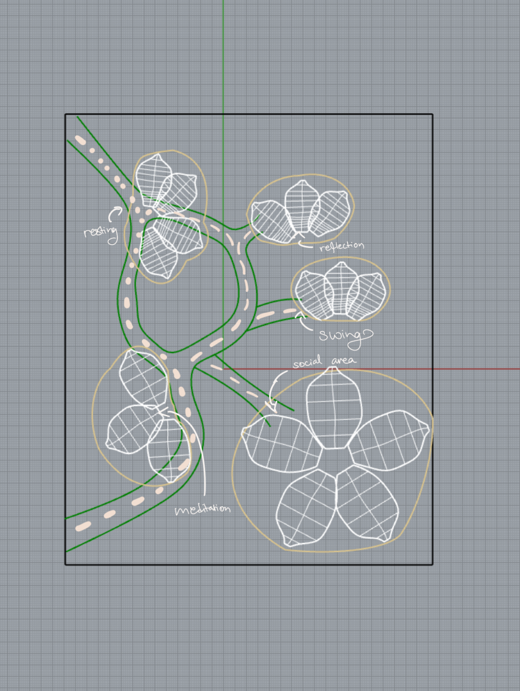
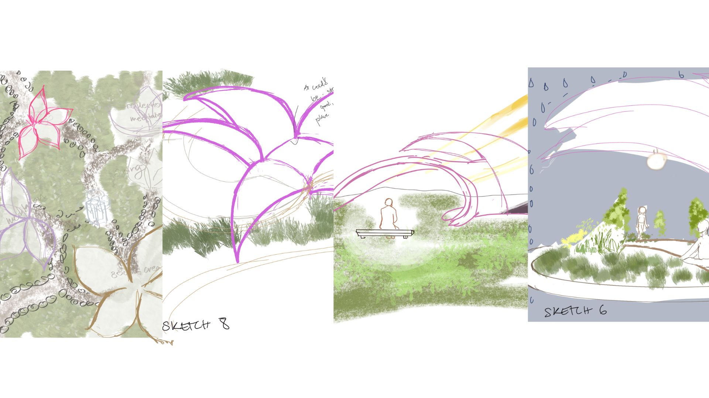

Overview: Mycelium Mind is a biomimetic healing garden concept inspired by the intelligence of mycelial networks. The project translates interconnected natural systems into a spatial experience centered on pause, emotional regulation, and gentle movement.
Problem: Urban environments often prioritize efficiency over emotional wellbeing, leaving few public spaces that actively invite reflection, calm, and restorative interaction.
Concept: I looked to mycelium as a model for connection, resilience, and quiet support. Rather than designing a linear park experience, I created a system of circular and branching pathways that encourage non-linear movement, discovery, and moments of pause.
Process: The project developed through site planning, biomimetic form exploration, and pavilion studies. Petal-like structures became the primary spatial language, offering zones for meditation, reflection, swings, resting, and social gathering. The goal was to create a landscape that feels emotionally protective while still remaining open and communal.
Outcome: The final proposal frames the garden as a living system of care — one that supports emotional resilience through natural metaphors, soft form language, and experiential storytelling.
Why these functions and forms
The program was organized around emotional states rather than only physical activities. Each zone was designed to support a different kind of pause: meditation for quiet reflection, resting for stillness, swings for gentle movement, and the social area for soft interaction.
The petal-like canopies were chosen to feel protective without being closed. Their curved form creates shelter while maintaining openness, light, and connection to nature.
The non-linear path system reflects how healing is not linear. Instead of forcing a route, the space allows wandering, choice, and emotional pacing.
Process

Final spatial plan showing interconnected zones inspired by mycelium networks.

Development of organic canopy forms to create emotional shelter.
Back to selected work →